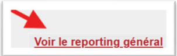

Overview
The attendance platform developed by Kaeyros Analytics allows clients to ensure two main functions:
Manage attendance and users within their own company;
Distribute and administer the solution on behalf of other client organizations (for customers with Reseller status).
This section details the different usage steps, starting with logging into the administration platform.
Logging into the Administration Platform
Access to the administration platform is done via a web browser. Here are the steps to log in:
Open your browser (Google Chrome, Firefox, Edge, etc.)
Enter the following URL: https://pointing-front.kaeyros.org
Enter the credentials provided during the subscription to the service (email address and password)
Click “Login” to access your account.

If you forget your password, please contact us to obtain a new one. Once logged in, you will be redirected to the reporting dashboard, where you can view employees’ attendance data for a given day.

Reporting Dashboard
Once connected to the dashboard, you can view daily attendance, manually enter attendance, download the attendance report, and consult global reporting.
i. Navigating between days Navigation between days is done using the following two buttons:

Clicking the < button takes you to the previous day; clicking the > button takes you to the next day.
ii. Manually entering attendance This function is intended for authorized personnel (e.g., reception staff) to manually record an employee’s attendance.
Click on the Enter attendance button.

A dialog box opens: select the employee concerned as well as their site.

Click Validate to save the attendance.
Once validated, the attendance appears in the day’s summary table.
Important: each employee must clock in twice a day:
Clock In: arrival time
Clock Out: departure time.
iii. Downloading the daily attendance report
Navigate to the day for which you want to generate a report.
Click the Attendance Report button.

An Excel file containing all employees’ attendance for the selected day is automatically downloaded.

File structure:
Employee: employee’s name
Arrival / Departure: check-in/out times
Site: location of the attendance
Delay Value: duration of any delay
Overtime: hours worked beyond the standard
Balance: difference between expected and actual worked time.
iv. Viewing daily attendance statistics

You can view:
The number of employees who arrived on time
The number of late employees
Attendance, lateness, and punctuality percentages, displayed on the right-hand side of the dashboard.
v. Viewing attendance details

The displayed data includes the same columns as the Excel report: arrival and departure times, site, delay, overtime, and balance.
You can also use the following options: search by employee name, filter by site, and navigate between pages using the pagination menu.
vi. Viewing global reporting The global reporting feature allows you to analyze employees’ attendance trends over an extended period (month, quarter, year). Unlike the daily dashboard, this view provides a global summary to help evaluate punctuality and attendance at the company or department level.
From the Main Dashboard, click the View Global Reporting link.
You will automatically be redirected to the second Dashboard, dedicated to global analysis.
Select the desired period (month, quarter, year) using the available filters.
Configure your platform
The initial platform setup is reserved for users with the Administrator role. It allows you to define the company’s key structures: sites, working hours, departments, and positions.
All these options are accessible from the Settings tab.
i. Adding Sites
Go to the Settings tab. You are automatically redirected to the Sites sub-tab.

Click the Add Site button.

A dialog box opens. Fill in the following information:
Site name
Phone number (used for WhatsApp attendance integration)
Site address
Geographic coordinates (click Get Location, ensuring geolocation is enabled on your device).

Click Next to define working hours:
Select working days
Indicate opening and closing hours (e.g., 08:30 – 17:30).

Click Validate to finalize.
Once validated, a QR Code is automatically generated. This QR Code is used for employees’ attendance at the given site.

Tip: before printing or sharing, test the QR Code to make sure it redirects correctly to the configured WhatsApp number.
ii. Viewing and editing a site
Still in the Sites sub-tab, view the list of already created sites.

To edit or delete a site, click the Edit button:
You can update the name, phone number, geographic coordinates, and working hours
You can also delete a site if necessary.
To download a site’s QR Code, click the Download icon next to the Edit button.
iii. Configuring working hours
Go to the Working Hours sub-tab under Settings.
Select the relevant site from the dropdown list.

Adjust the hours as needed (working days, opening/closing hours).
Save your changes by clicking Validate.
iv. Configuring departments
Go to the Department sub-tab.

You can:
View the list of existing departments
Edit a department’s name using the Edit button
Delete a department using the Edit button.
v. Configuring positions
Go to the Position sub-tab.

You can:
View all company positions
Edit the title or description of a position
Delete an existing position using the Edit button.
Employee Management
This is done from the Employee tab.

In this tab, you can view registered employees, add a new employee, edit employee information, or delete an employee.

i. Adding an employee By clicking the Add Employee button, you can add a new employee. A dialog box opens, and you must enter the employee’s name, phone number, email address, position, and department.

⚠️ Important: For the phone number, make sure to enter it exactly as it is on WhatsApp (e.g., numbers without 6 like 23789898989, and numbers with 6 like 237689898989).
ii. Viewing, editing, and deleting an employee The process is the same as in other cases. Using the Edit button, you can choose either to modify or to delete the employee depending on what you want to do.

Account Management
This is done from the Account tab. Only users with the role of Admin or Account Manager can see this tab.

This section has two main features: Add a new company and Add a user.
i. Adding a company This feature allows you to create a new company to which you want to sell the attendance tool. You must add the company here and then add a user to manage it.
Clicking the Add Company button opens a dialog box where you must fill in the company’s details.


You must provide the company name, the name of a company representative, email, and phone number, then click Validate to complete the company creation. You cannot create two companies with the same phone number.
ii. Viewing, editing, deleting companies

When you create a new company, it is automatically added to the list of companies, as shown above. Using the Edit button on the far right of each company, you can:
Edit the company’s information (click Edit)
Delete the company (click Delete).
Note: If you have the Account Manager role, you can only view and edit companies you added yourself. You cannot edit a company created by an Admin or another Account Manager.
iii. Adding a user Generally, when you create a company, you must add a user to manage it and assign them the Admin role.
In the User sub-tab, click the Add User button to start the process.

A dialog box opens where you must fill in the user’s details.

You are responsible for sending the credentials (email and password) to the user so they can access the platform to manage their company.
iv. Viewing, editing, deleting users

When you add a new user, they automatically appear in the list, as shown above. Using the Edit button on the far right of each user, you can:
Modify the user’s information (click Edit)
Delete the user if necessary (click Delete).
Note: If you have the Account Manager role, you can only view and edit users you created yourself. You cannot edit a user added by an Admin or another Account Manager.